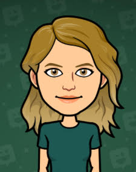
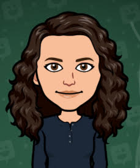
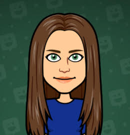

Hi! Our names are Josie, Claire and Ele. We like relaxing and scented candles. We also like nature. We make vegan, scented candles in mason jars. Our candles come in these scents: Rosemary-lavender, peppermint, rose, tea tree, orange and lavender. We hope our candles help you in these difficult times.
  Our name is Firefly. We named our company Firefly because we thought that candles remind us of fireflies. In these difficult times we need to make sure we are taking care of ourselves and our candles are here to help you relax and take a deep breath. I hope our candles can help you relax.
Hi my name is Claire and I am the VP of Operations. I love being in nature, seeing animals in the wild and forests. My favorite scent is lavender-rosemary
Hi my Name is Josie and I am the VP of Communications and Marketing. I love the ocean, going for hikes, and relaxing. My fave scent is lavender rosemary
Hi, My name is Ele. I am the VP of Information and Finance. I love climbing trees and reading. My favorite scent is peppermint.
A: Well, all of our candles are one hundred present vegan and cruelty free. We have lots of different scents for our candles including, Rosemary-lavender, peppermint and lavender. Fireflies candles are in mason jars so they are durable yet look nice. Our candles are small so that they don't take up a lot of space and you can repurpose the jar once the candle is burned out.
A: Our team understands that it is important to take care of ourselves, especially in these trying times, and our candles are a great way to take a deep breath and relax. We also really like nature and so that inspired us to make our candles vegan.
A: Wow don't get me started, our team works together very well, we listen to each other and provide constructive criticism and encouragement. We are also all such good friends.